2024 Advanced Higher Computing Science questions
Source: Scottish Qualifications Authority (SQA) / Qualifications Scotland. This is a StemInteract HTML companion, not an official HTML edition. Selectable text is supplied alongside original page images. Use the images or original PDF for equations, powers, fractions, vector notation, tables and diagrams; text extraction cannot fully preserve mathematical layout.
Jump to a question
PDF page 1
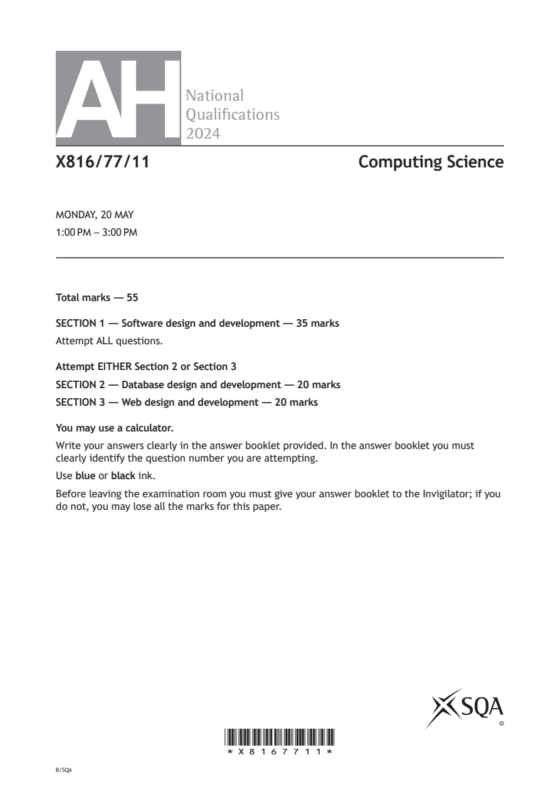
Selectable page text
AH
National
Qualications
2024
X816/77/11 Computing Science
MONDAY, 20 MAY
1:00 PM – 3:00 PM
Total marks — 55
SECTION 1 — Software design and development — 35 marks
Attempt ALL questions.
Attempt EITHER Section 2 or Section 3
SECTION 2 — Database design and development — 20 marks
SECTION 3 — Web design and development — 20 marks
You may use a calculator.
Write your answers clearly in the answer booklet provided. In the answer booklet you must
clearly identify the question number you are attempting.
Use blue or black ink.
Before leaving the examination room you must give your answer booklet to the Invigilator; if you
do not, you may lose all the marks for this paper.
©
*X8167711*
B/SQAPDF page 2
Question 1Question 2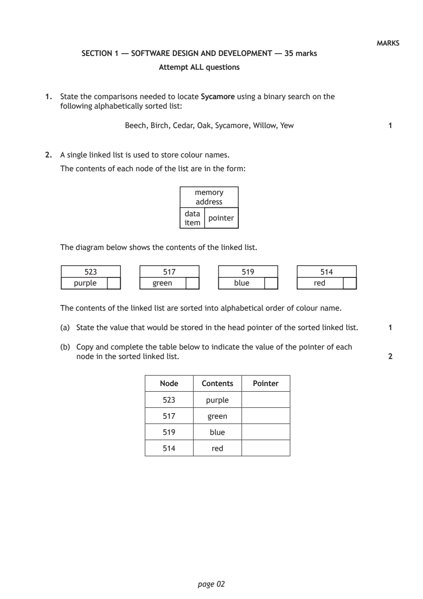
Selectable page text
MARKS
SECTION 1 — SOFTWARE DESIGN AND DEVELOPMENT — 35 marks
Attempt ALL questions
1. State the comparisons needed to locate Sycamore using a binary search on the
following alphabetically sorted list:
Beech, Birch, Cedar, Oak, Sycamore, Willow, Yew 1
2. A single linked list is used to store colour names.
The contents of each node of the list are in the form:
memory
address
data
pointer
item
The diagram below shows the contents of the linked list.
523 517 519 514
purple green blue red
The contents of the linked list are sorted into alphabetical order of colour name.
(a) State the value that would be stored in the head pointer of the sorted linked list. 1
(b) Copy and complete the table below to indicate the value of the pointer of each
node in the sorted linked list. 2
Node Contents Pointer
523 purple
517 green
519 blue
514 red
page 02PDF page 3
Question 3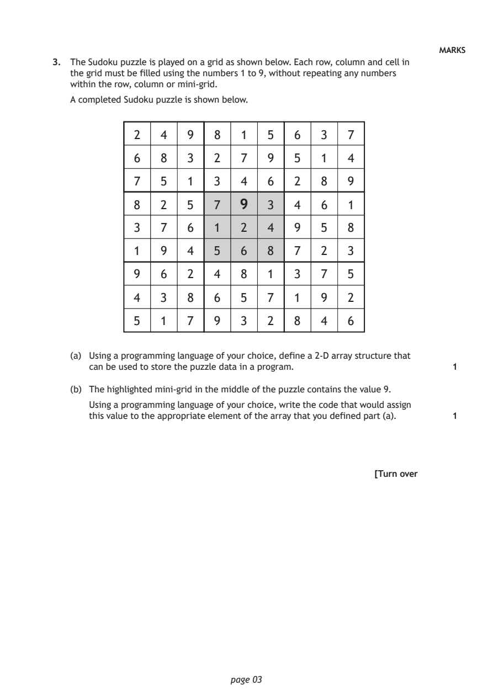
Selectable page text
MARKS
3. The Sudoku puzzle is played on a grid as shown below. Each row, column and cell in
the grid must be filled using the numbers 1 to 9, without repeating any numbers
within the row, column or mini-grid.
A completed Sudoku puzzle is shown below.
2 4 9 8 1 5 6 3 7
6 8 3 2 7 9 5 1 4
7 5 1 3 4 6 2 8 9
8 2 5 7 9 3 4 6 1
3 7 6 1 2 4 9 5 8
1 9 4 5 6 8 7 2 3
9 6 2 4 8 1 3 7 5
4 3 8 6 5 7 1 9 2
5 1 7 9 3 2 8 4 6
(a) Using a programming language of your choice, define a 2-D array structure that
can be used to store the puzzle data in a program. 1
(b) The highlighted mini-grid in the middle of the puzzle contains the value 9.
Using a programming language of your choice, write the code that would assign
this value to the appropriate element of the array that you defined part (a). 1
[Turn over
page 03PDF page 4
Question 4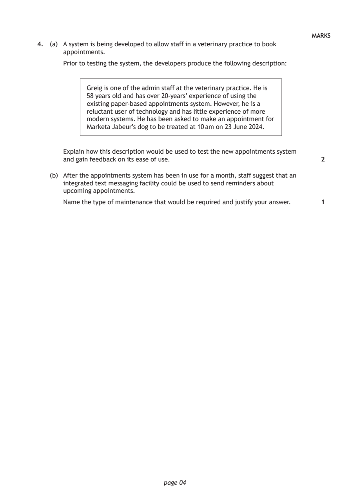
Selectable page text
MARKS
4. (a) A system is being developed to allow staff in a veterinary practice to book
appointments.
Prior to testing the system, the developers produce the following description:
Greig is one of the admin staff at the veterinary practice. He is
58 years old and has over 20-years’ experience of using the
existing paper-based appointments system. However, he is a
reluctant user of technology and has little experience of more
modern systems. He has been asked to make an appointment for
Marketa Jabeur’s dog to be treated at 10 am on 23 June 2024.
Explain how this description would be used to test the new appointments system
and gain feedback on its ease of use. 2
(b) After the appointments system has been in use for a month, staff suggest that an
integrated text messaging facility could be used to send reminders about
upcoming appointments.
Name the type of maintenance that would be required and justify your answer. 1
page 04PDF page 5
Selectable page text
[Turn over for next question
DO NOT WRITE ON THIS PAGE
page 05PDF page 6
Question 5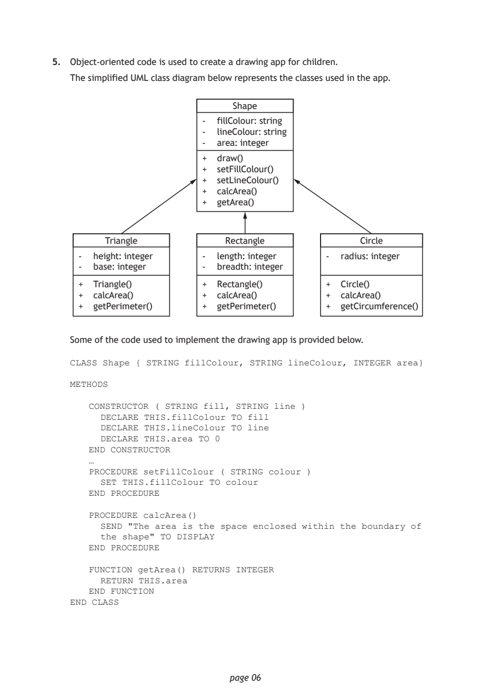
Selectable page text
5. Object-oriented code is used to create a drawing app for children.
The simplified UML class diagram below represents the classes used in the app.
Shape
- fillColour: string
- lineColour: string
- area: integer
+ draw()
+ setFillColour()
+ setLineColour()
+ calcArea()
+ getArea()
Triangle Rectangle Circle
- height: integer - length: integer - radius: integer
- base: integer - breadth: integer
+ Triangle() + Rectangle() + Circle()
+ calcArea() + calcArea() + calcArea()
+ getPerimeter() + getPerimeter() + getCircumference()
Some of the code used to implement the drawing app is provided below.
CLASS Shape { STRING fillColour, STRING lineColour, INTEGER area}
METHODS
CONSTRUCTOR ( STRING fill, STRING line )
DECLARE THIS.fillColour TO fill
DECLARE THIS.lineColour TO line
DECLARE THIS.area TO 0
END CONSTRUCTOR
…
PROCEDURE setFillColour ( STRING colour )
SET THIS.fillColour TO colour
END PROCEDURE
PROCEDURE calcArea()
SEND "The area is the space enclosed within the boundary of
the shape" TO DISPLAY
END PROCEDURE
FUNCTION getArea() RETURNS INTEGER
RETURN THIS.area
END FUNCTION
END CLASS
page 06PDF page 7
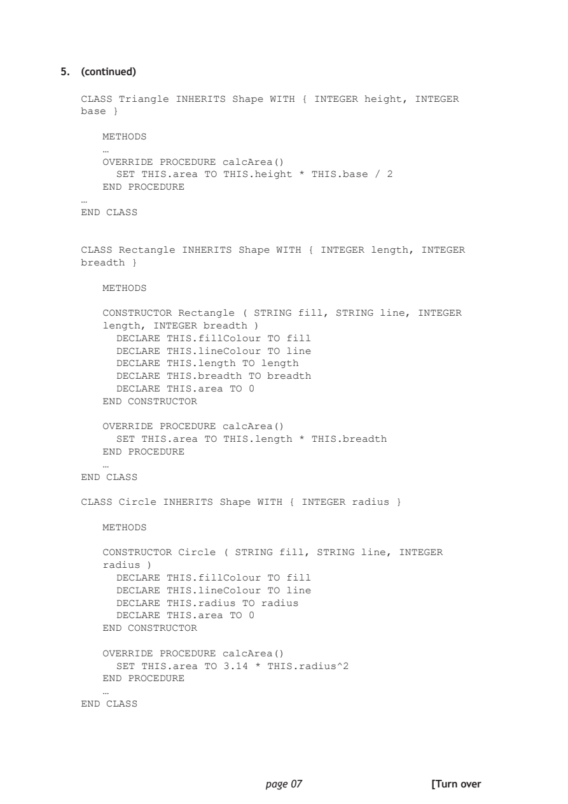
Selectable page text
5. (continued)
CLASS Triangle INHERITS Shape WITH { INTEGER height, INTEGER
base }
METHODS
…
OVERRIDE PROCEDURE calcArea()
SET THIS.area TO THIS.height * THIS.base / 2
END PROCEDURE
…
END CLASS
CLASS Rectangle INHERITS Shape WITH { INTEGER length, INTEGER
breadth }
METHODS
CONSTRUCTOR Rectangle ( STRING fill, STRING line, INTEGER
length, INTEGER breadth )
DECLARE THIS.fillColour TO fill
DECLARE THIS.lineColour TO line
DECLARE THIS.length TO length
DECLARE THIS.breadth TO breadth
DECLARE THIS.area TO 0
END CONSTRUCTOR
OVERRIDE PROCEDURE calcArea()
SET THIS.area TO THIS.length * THIS.breadth
END PROCEDURE
…
END CLASS
CLASS Circle INHERITS Shape WITH { INTEGER radius }
METHODS
CONSTRUCTOR Circle ( STRING fill, STRING line, INTEGER
radius )
DECLARE THIS.fillColour TO fill
DECLARE THIS.lineColour TO line
DECLARE THIS.radius TO radius
DECLARE THIS.area TO 0
END CONSTRUCTOR
OVERRIDE PROCEDURE calcArea()
SET THIS.area TO 3.14 * THIS.radius^2
END PROCEDURE
…
END CLASS
page 07 [Turn overPDF page 8
Selectable page text
MARKS
5. (continued)
(a) With reference to the UML class diagram and code, explain the use made of
overriding. 2
(b) The following code appears within the main program that controls the app.
DECLARE r1 AS Rectangle ("white", "black", 20, 16)
(i) Using appropriate object-oriented terminology, explain the effect of this
statement. 2
(ii) State the output that would be produced by the following code: 2
SEND "The area is " & r1.getArea() TO DISPLAY
r1.calcArea()
SEND "The area is " & r1.getArea() TO DISPLAY
page 08PDF page 9
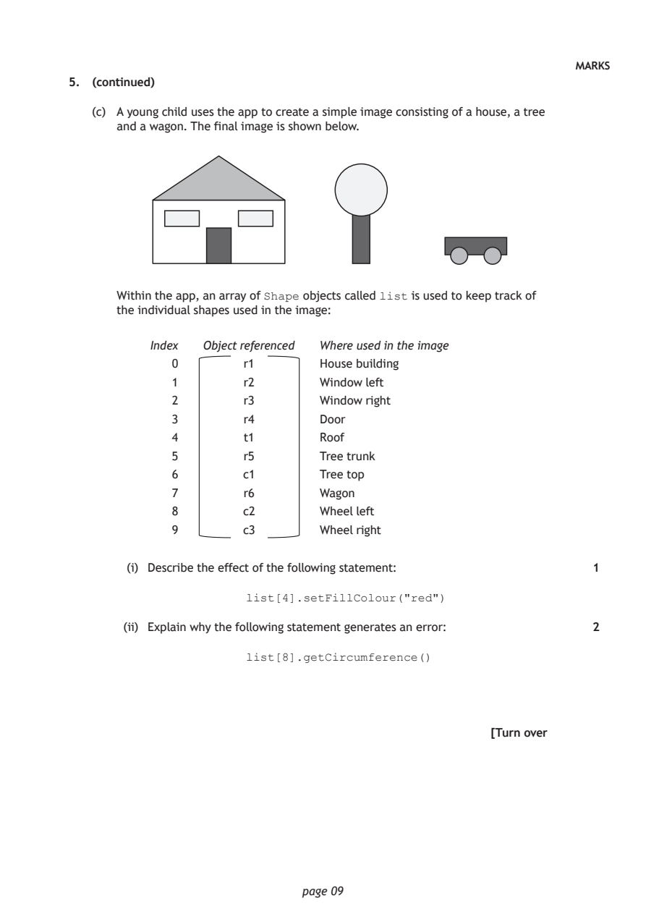
Selectable page text
MARKS
5. (continued)
(c) A young child uses the app to create a simple image consisting of a house, a tree
and a wagon. The final image is shown below.
Within the app, an array of objects called is used to keep track of
Shape list
the individual shapes used in the image:
Index Object referenced Where used in the image
0 r1 House building
1 r2 Window left
2 r3 Window right
3 r4 Door
4 t1 Roof
5 r5 Tree trunk
6 c1 Tree top
7 r6 Wagon
8 c2 Wheel left
9 c3 Wheel right
(i) Describe the effect of the following statement: 1
list[4].setFillColour("red")
(ii) Explain why the following statement generates an error: 2
list[8].getCircumference()
[Turn over
page 09PDF page 10
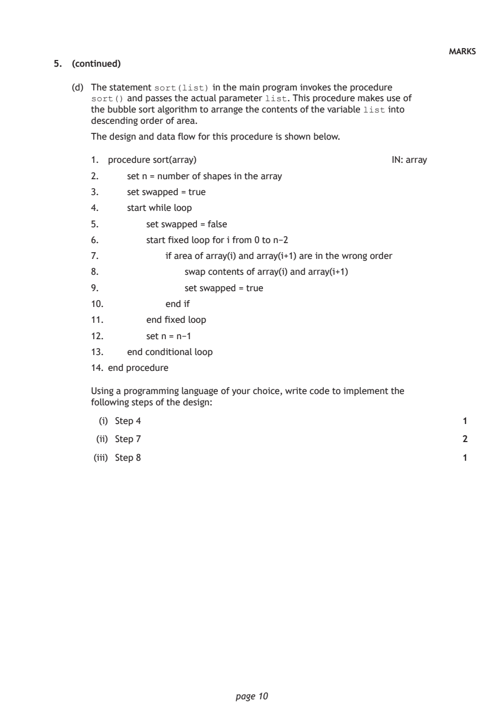
Selectable page text
MARKS
5. (continued)
(d) The statement in the main program invokes the procedure
sort(list)
and passes the actual parameter . This procedure makes use of
sort() list
the bubble sort algorithm to arrange the contents of the variable into
list
descending order of area.
The design and data flow for this procedure is shown below.
1. procedure sort(array) IN: array
2. set n = number of shapes in the array
3. set swapped = true
4. start while loop
5. set swapped = false
6. start fixed loop for i from 0 to n−2
7. if area of array(i) and array(i+1) are in the wrong order
8. swap contents of array(i) and array(i+1)
9. set swapped = true
10. end if
11. end fixed loop
12. set n = n−1
13. end conditional loop
14. end procedure
Using a programming language of your choice, write code to implement the
following steps of the design:
(i) Step 4 1
(ii) Step 7 2
(iii) Step 8 1
page 10PDF page 11

Selectable page text
[Turn over for next question
DO NOT WRITE ON THIS PAGE
page 11PDF page 12
Question 6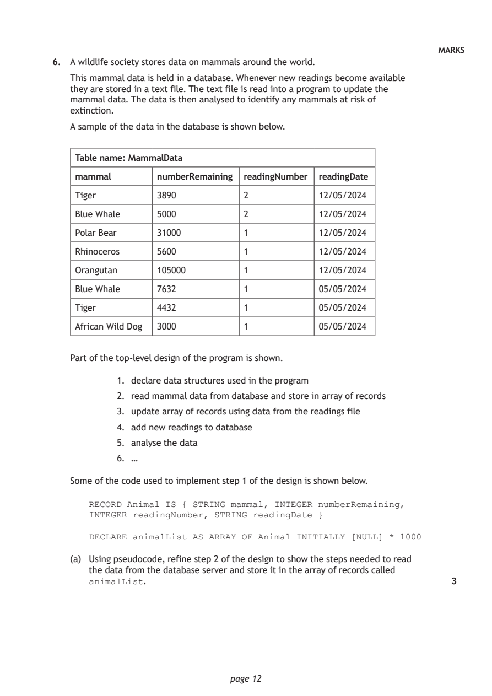
Selectable page text
MARKS
6. A wildlife society stores data on mammals around the world.
This mammal data is held in a database. Whenever new readings become available
they are stored in a text file. The text file is read into a program to update the
mammal data. The data is then analysed to identify any mammals at risk of
extinction.
A sample of the data in the database is shown below.
Table name: MammalData
mammal numberRemaining readingNumber readingDate
Tiger 3890 2 12/05/2024
Blue Whale 5000 2 12/05/2024
Polar Bear 31000 1 12/05/2024
Rhinoceros 5600 1 12/05/2024
Orangutan 105000 1 12/05/2024
Blue Whale 7632 1 05/05/2024
Tiger 4432 1 05/05/2024
African Wild Dog 3000 1 05/05/2024
Part of the top-level design of the program is shown.
1. declare data structures used in the program
2. read mammal data from database and store in array of records
3. update array of records using data from the readings file
4. add new readings to database
5. analyse the data
6. …
Some of the code used to implement step 1 of the design is shown below.
RECORD Animal IS { STRING mammal, INTEGER numberRemaining,
INTEGER readingNumber, STRING readingDate }
DECLARE animalList AS ARRAY OF Animal INITIALLY [NULL] * 1000
(a) Using pseudocode, refine step 2 of the design to show the steps needed to read
the data from the database server and store it in the array of records called
. 3
animalList
page 12PDF page 13
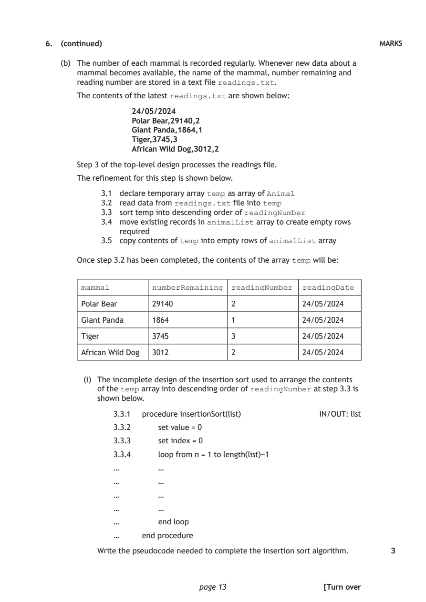
Selectable page text
6. (continued) MARKS
(b) The number of each mammal is recorded regularly. Whenever new data about a
mammal becomes available, the name of the mammal, number remaining and
reading number are stored in a text file .
readings.txt
The contents of the latest are shown below:
readings.txt
24/05/2024
Polar Bear,29140,2
Giant Panda,1864,1
Tiger,3745,3
African Wild Dog,3012,2
Step 3 of the top-level design processes the readings file.
The refinement for this step is shown below.
3.1 declare temporary array as array of
temp Animal
3.2 read data from file into
readings.txt temp
3.3 sort temp into descending order of
readingNumber
3.4 m ove existing records in array to create empty rows
animalList
required
3.5 copy contents of into empty rows of array
temp animalList
Once step 3.2 has been completed, the contents of the array will be:
temp
mammal numberRemaining readingNumber readingDate
Polar Bear 29140 2 24/05/2024
Giant Panda 1864 1 24/05/2024
Tiger 3745 3 24/05/2024
African Wild Dog 3012 2 24/05/2024
(i) The incomplete design of the insertion sort used to arrange the contents
of the array into descending order of at step 3.3 is
temp readingNumber
shown below.
3.3.1 procedure insertionSort(list) IN/OUT: list
3.3.2 set value = 0
3.3.3 set index = 0
3.3.4 loop from n = 1 to length(list)−1
… …
… …
… …
… …
… end loop
… end procedure
Write the pseudocode needed to complete the insertion sort algorithm. 3
page 13 [Turn overPDF page 14
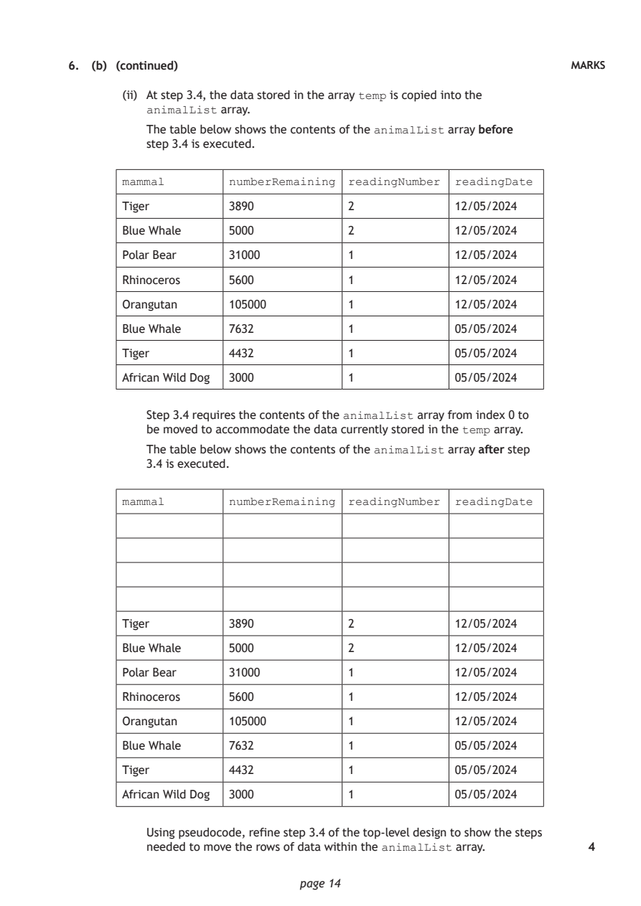
Selectable page text
6. (b) (continued) MARKS
(ii) At step 3.4, the data stored in the array is copied into the
temp
array.
animalList
The table below shows the contents of the array before
animalList
step 3.4 is executed.
mammal numberRemaining readingNumber readingDate
Tiger 3890 2 12/05/2024
Blue Whale 5000 2 12/05/2024
Polar Bear 31000 1 12/05/2024
Rhinoceros 5600 1 12/05/2024
Orangutan 105000 1 12/05/2024
Blue Whale 7632 1 05/05/2024
Tiger 4432 1 05/05/2024
African Wild Dog 3000 1 05/05/2024
Step 3.4 requires the contents of the array from index 0 to
animalList
be moved to accommodate the data currently stored in the array.
temp
The table below shows the contents of the array after step
animalList
3.4 is executed.
mammal numberRemaining readingNumber readingDate
Tiger 3890 2 12/05/2024
Blue Whale 5000 2 12/05/2024
Polar Bear 31000 1 12/05/2024
Rhinoceros 5600 1 12/05/2024
Orangutan 105000 1 12/05/2024
Blue Whale 7632 1 05/05/2024
Tiger 4432 1 05/05/2024
African Wild Dog 3000 1 05/05/2024
Using pseudocode, refine step 3.4 of the top-level design to show the steps
needed to move the rows of data within the array. 4
animalList
page 14PDF page 15
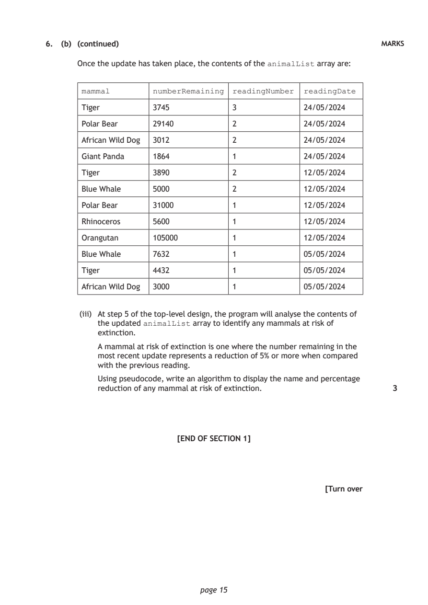
Selectable page text
6. (b) (continued) MARKS
Once the update has taken place, the contents of the array are:
animalList
mammal numberRemaining readingNumber readingDate
Tiger 3745 3 24/05/2024
Polar Bear 29140 2 24/05/2024
African Wild Dog 3012 2 24/05/2024
Giant Panda 1864 1 24/05/2024
Tiger 3890 2 12/05/2024
Blue Whale 5000 2 12/05/2024
Polar Bear 31000 1 12/05/2024
Rhinoceros 5600 1 12/05/2024
Orangutan 105000 1 12/05/2024
Blue Whale 7632 1 05/05/2024
Tiger 4432 1 05/05/2024
African Wild Dog 3000 1 05/05/2024
(iii) At step 5 of the top-level design, the program will analyse the contents of
the updated array to identify any mammals at risk of
animalList
extinction.
A mammal at risk of extinction is one where the number remaining in the
most recent update represents a reduction of 5% or more when compared
with the previous reading.
Using pseudocode, write an algorithm to display the name and percentage
reduction of any mammal at risk of extinction. 3
[END OF SECTION 1]
[Turn over
page 15PDF page 16
Question 7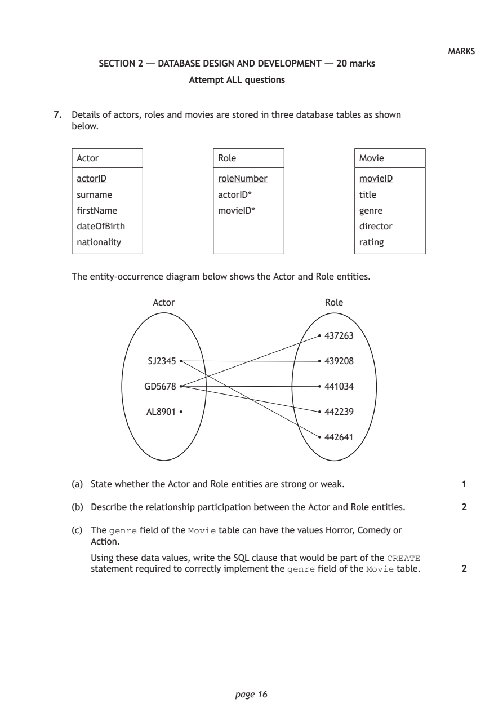
Selectable page text
MARKS
SECTION 2 — DATABASE DESIGN AND DEVELOPMENT — 20 marks
Attempt ALL questions
7. Details of actors, roles and movies are stored in three database tables as shown
below.
Actor Role Movie
actorID roleNumber movieID
surname actorID* title
firstName movieID* genre
dateOfBirth director
nationality rating
The entity-occurrence diagram below shows the Actor and Role entities.
Actor Role
• 437263
SJ2345 • • 439208
GD5678 • • 441034
AL8901 • • 442239
• 442641
(a) State whether the Actor and Role entities are strong or weak. 1
(b) Describe the relationship participation between the Actor and Role entities. 2
(c) The field of the table can have the values Horror, Comedy or
genre Movie
Action.
Using these data values, write the SQL clause that would be part of the
CREATE
statement required to correctly implement the field of the table. 2
genre Movie
page 16PDF page 17
Question 8Selectable page text
MARKS
8. A new database-driven appointments system is being introduced in a medical centre.
(a) The developers begin by investigating the hardware and software required for
running this system.
State the type of feasibility being investigated. 1
(b) The appointments system will allow admin staff to make appointments, edit
appointments or cancel appointments. In addition, medical staff will also be
able to view patient notes and, if required, they can add details to a patient’s
notes.
Draw a UML use case diagram for the appointments system. 3
[Turn over
page 17PDF page 18
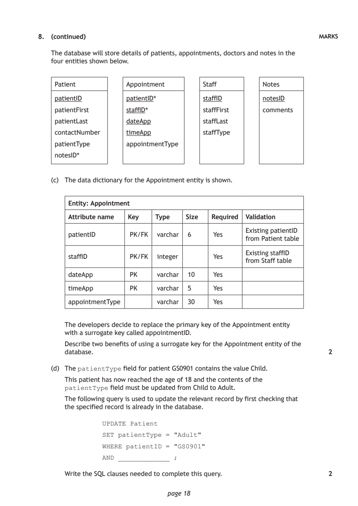
Selectable page text
8. (continued) MARKS
The database will store details of patients, appointments, doctors and notes in the
four entities shown below.
Patient Appointment Staff Notes
patientID patientID* staffID notesID
patientFirst staffID* staffFirst comments
patientLast dateApp staffLast
contactNumber timeApp staffType
patientType appointmentType
notesID*
(c) The data dictionary for the Appointment entity is shown.
Entity: Appointment
Attribute name Key Type Size Required Validation
Existing patientID
patientID PK/FK varchar 6 Yes
from Patient table
Existing staffID
staffID PK/FK integer Yes
from Staff table
dateApp PK varchar 10 Yes
timeApp PK varchar 5 Yes
appointmentType varchar 30 Yes
The developers decide to replace the primary key of the Appointment entity
with a surrogate key called appointmentID.
Describe two benefits of using a surrogate key for the Appointment entity of the
database. 2
(d) The field for patient GS0901 contains the value Child.
patientType
This patient has now reached the age of 18 and the contents of the
field must be updated from Child to Adult.
patientType
The following query is used to update the relevant record by first checking that
the specified record is already in the database.
UPDATE Patient
SET patientType = "Adult"
WHERE patientID = "GS0901"
AND _____________ ;
Write the SQL clauses needed to complete this query. 2
page 18PDF page 19
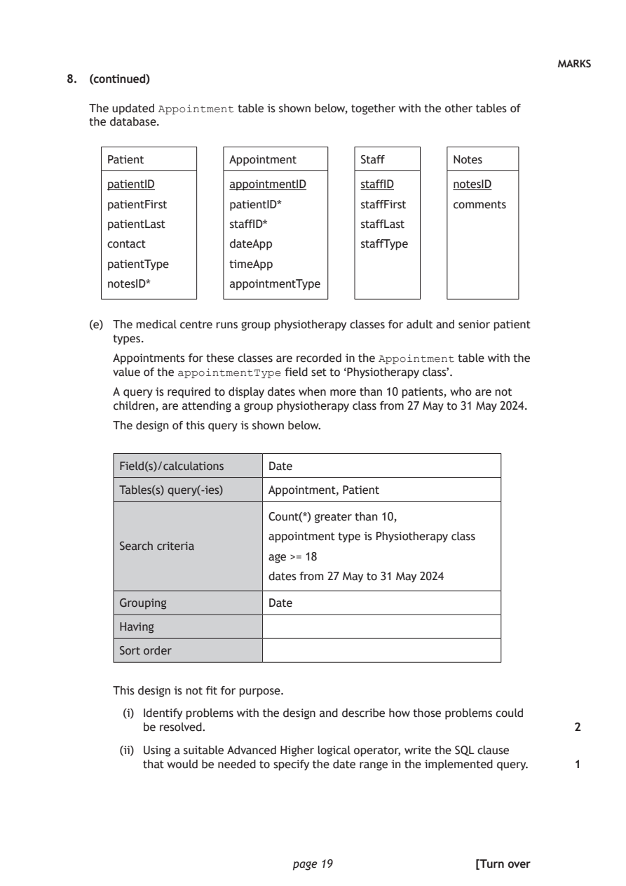
Selectable page text
MARKS
8. (continued)
The updated table is shown below, together with the other tables of
Appointment
the database.
Patient Appointment Staff Notes
patientID appointmentID staffID notesID
patientFirst patientID* staffFirst comments
patientLast staffID* staffLast
contact dateApp staffType
patientType timeApp
notesID* appointmentType
(e) The medical centre runs group physiotherapy classes for adult and senior patient
types.
Appointments for these classes are recorded in the table with the
Appointment
value of the field set to ‘Physiotherapy class’.
appointmentType
A query is required to display dates when more than 10 patients, who are not
children, are attending a group physiotherapy class from 27 May to 31 May 2024.
The design of this query is shown below.
Field(s)/calculations Date
Tables(s) query(-ies) Appointment, Patient
Count(*) greater than 10,
appointment type is Physiotherapy class
Search criteria
age >= 18
dates from 27 May to 31 May 2024
Grouping Date
Having
Sort order
This design is not fit for purpose.
(i) Identify problems with the design and describe how those problems could
be resolved. 2
(ii) Using a suitable Advanced Higher logical operator, write the SQL clause
that would be needed to specify the date range in the implemented query. 1
page 19 [Turn overPDF page 20
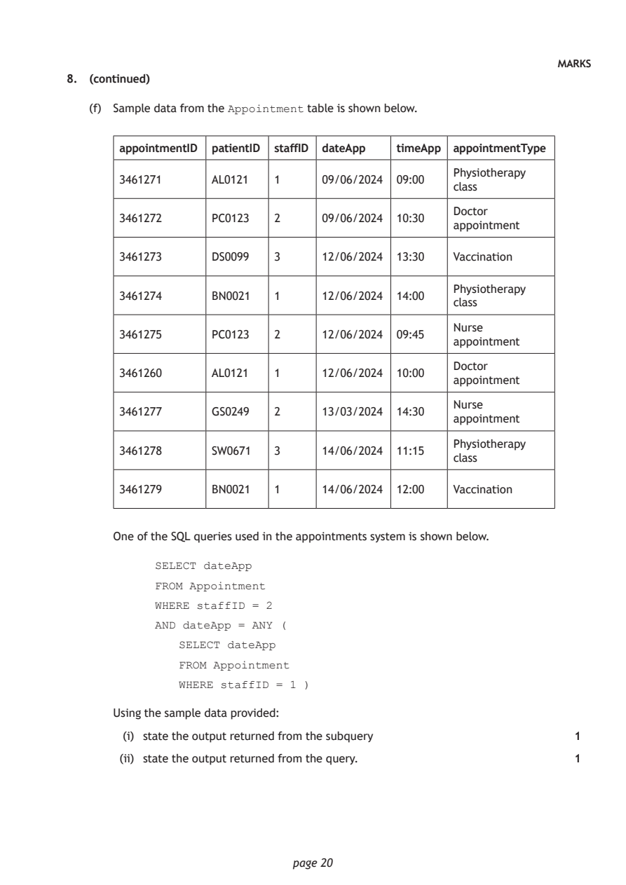
Selectable page text
MARKS
8. (continued)
(f) Sample data from the table is shown below.
Appointment
appointmentID patientID staffID dateApp timeApp appointmentType
Physiotherapy
3461271 AL0121 1 09/06/2024 09:00
class
Doctor
3461272 PC0123 2 09/06/2024 10:30
appointment
3461273 DS0099 3 12/06/2024 13:30 Vaccination
Physiotherapy
3461274 BN0021 1 12/06/2024 14:00
class
Nurse
3461275 PC0123 2 12/06/2024 09:45
appointment
Doctor
3461260 AL0121 1 12/06/2024 10:00
appointment
Nurse
3461277 GS0249 2 13/03/2024 14:30
appointment
Physiotherapy
3461278 SW0671 3 14/06/2024 11:15
class
3461279 BN0021 1 14/06/2024 12:00 Vaccination
One of the SQL queries used in the appointments system is shown below.
SELECT dateApp
FROM Appointment
WHERE staffID = 2
AND dateApp = ANY (
SELECT dateApp
FROM Appointment
WHERE staffID = 1 )
Using the sample data provided:
(i) state the output returned from the subquery 1
(ii) state the output returned from the query. 1
page 20PDF page 21
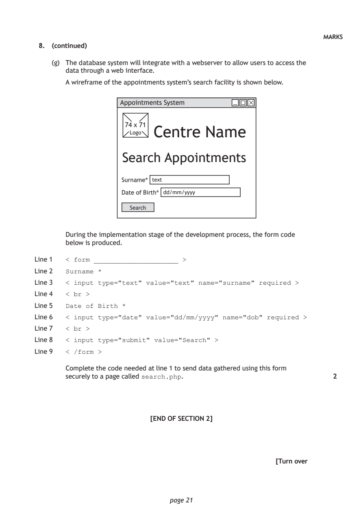
Selectable page text
MARKS
8. (continued)
(g) The database system will integrate with a webserver to allow users to access the
data through a web interface.
A wireframe of the appointments system’s search facility is shown below.
Appointments System
74 x 71
Centre Name
Logo
Search Appointments
Surname* text
Date of Birth* dd/mm/yyyy
Search
During the implementation stage of the development process, the form code
below is produced.
Line 1
< form _____________________ >
Line 2
Surname *
Line 3
< input type="text" value="text" name="surname" required >
Line 4
< br >
Line 5
Date of Birth *
Line 6
< input type="date" value="dd/mm/yyyy" name="dob" required >
Line 7
< br >
Line 8
< input type="submit" value="Search" >
Line 9
< /form >
Complete the code needed at line 1 to send data gathered using this form
securely to a page called . 2
search.php
[END OF SECTION 2]
[Turn over
page 21PDF page 22
Question 9Question 10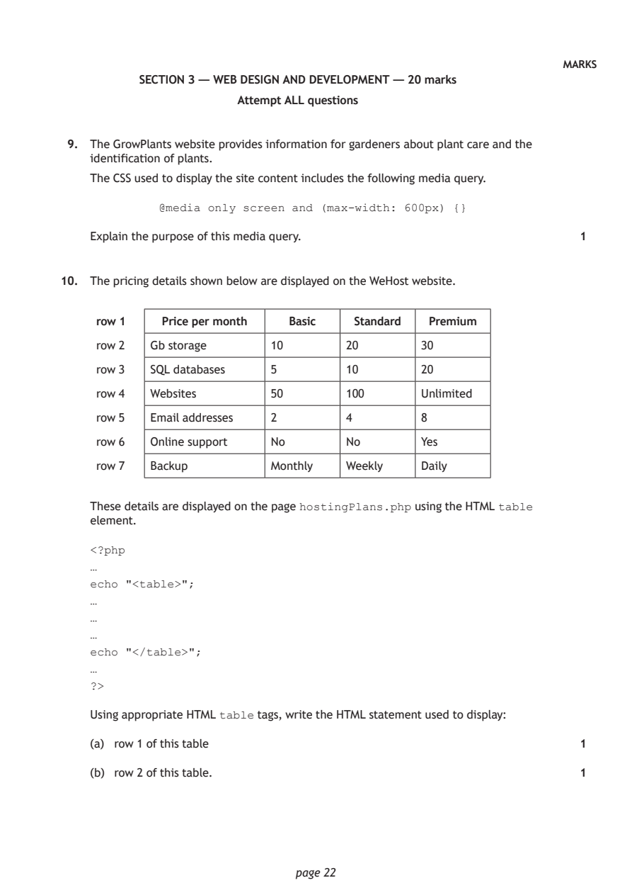
Selectable page text
MARKS
SECTION 3 — WEB DESIGN AND DEVELOPMENT — 20 marks
Attempt ALL questions
9. The GrowPlants website provides information for gardeners about plant care and the
identification of plants.
The CSS used to display the site content includes the following media query.
@media only screen and (max-width: 600px) {}
Explain the purpose of this media query. 1
10. The pricing details shown below are displayed on the WeHost website.
row 1 Price per month Basic Standard Premium
row 2 Gb storage 10 20 30
row 3 SQL databases 5 10 20
row 4 Websites 50 100 Unlimited
row 5 Email addresses 2 4 8
row 6 Online support No No Yes
row 7 Backup Monthly Weekly Daily
These details are displayed on the page using the HTML
hostingPlans.php table
element.
<?php
…
echo "<table>";
…
…
…
echo "</table>";
…
?>
Using appropriate HTML tags, write the HTML statement used to display:
table
(a) row 1 of this table 1
(b) row 2 of this table. 1
page 22PDF page 23
Question 11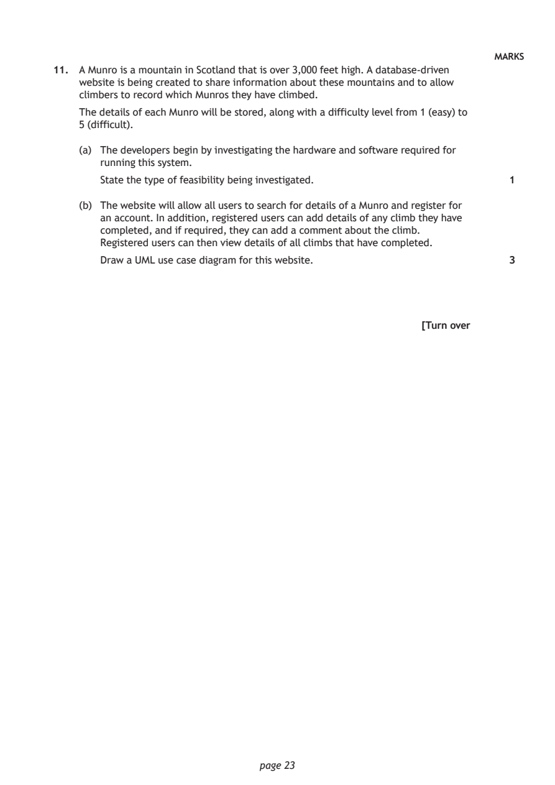
Selectable page text
MARKS
11. A Munro is a mountain in Scotland that is over 3,000 feet high. A database-driven
website is being created to share information about these mountains and to allow
climbers to record which Munros they have climbed.
The details of each Munro will be stored, along with a difficulty level from 1 (easy) to
5 (difficult).
(a) The developers begin by investigating the hardware and software required for
running this system.
State the type of feasibility being investigated. 1
(b) The website will allow all users to search for details of a Munro and register for
an account. In addition, registered users can add details of any climb they have
completed, and if required, they can add a comment about the climb.
Registered users can then view details of all climbs that have completed.
Draw a UML use case diagram for this website. 3
[Turn over
page 23PDF page 24
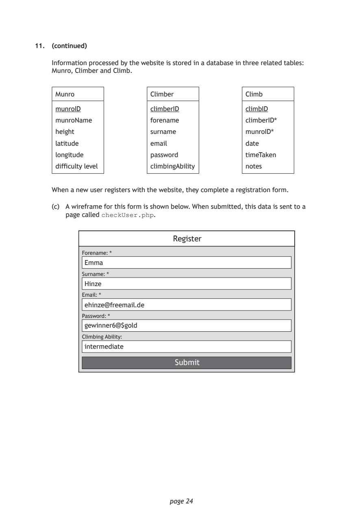
Selectable page text
11. (continued)
Information processed by the website is stored in a database in three related tables:
Munro, Climber and Climb.
Munro Climber Climb
munroID climberID climbID
munroName forename climberID*
height surname munroID*
latitude email date
longitude password timeTaken
difficulty level climbingAbility notes
When a new user registers with the website, they complete a registration form.
(c) A wireframe for this form is shown below. When submitted, this data is sent to a
page called .
checkUser.php
Register
Forename: *
Emma
Surname: *
Hinze
Email: *
ehinze@freemail.de
Password: *
gewinner6@$gold
Climbing Ability:
intermediate
Submit
page 24PDF page 25
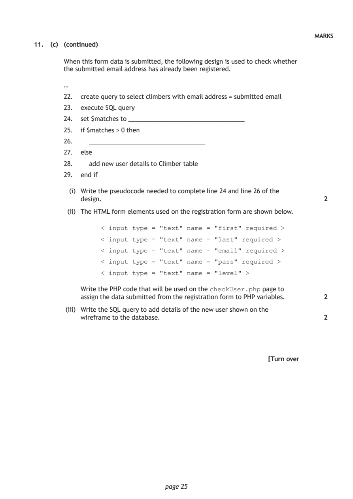
Selectable page text
MARKS
11. (c) (continued)
When this form data is submitted, the following design is used to check whether
the submitted email address has already been registered.
…
22. create query to select climbers with email address = submitted email
23. execute SQL query
24. set $matches to __________________________________
25. if $matches > 0 then
26. __________________________________
27. else
28. add new user details to Climber table
29. end if
(i) Write the pseudocode needed to complete line 24 and line 26 of the
design. 2
(ii) The HTML form elements used on the registration form are shown below.
< input type = "text" name = "first" required >
< input type = "text" name = "last" required >
< input type = "text" name = "email" required >
< input type = "text" name = "pass" required >
< input type = "text" name = "level" >
Write the PHP code that will be used on the page to
checkUser.php
assign the data submitted from the registration form to PHP variables. 2
(iii) Write the SQL query to add details of the new user shown on the
wireframe to the database. 2
[Turn over
page 25PDF page 26
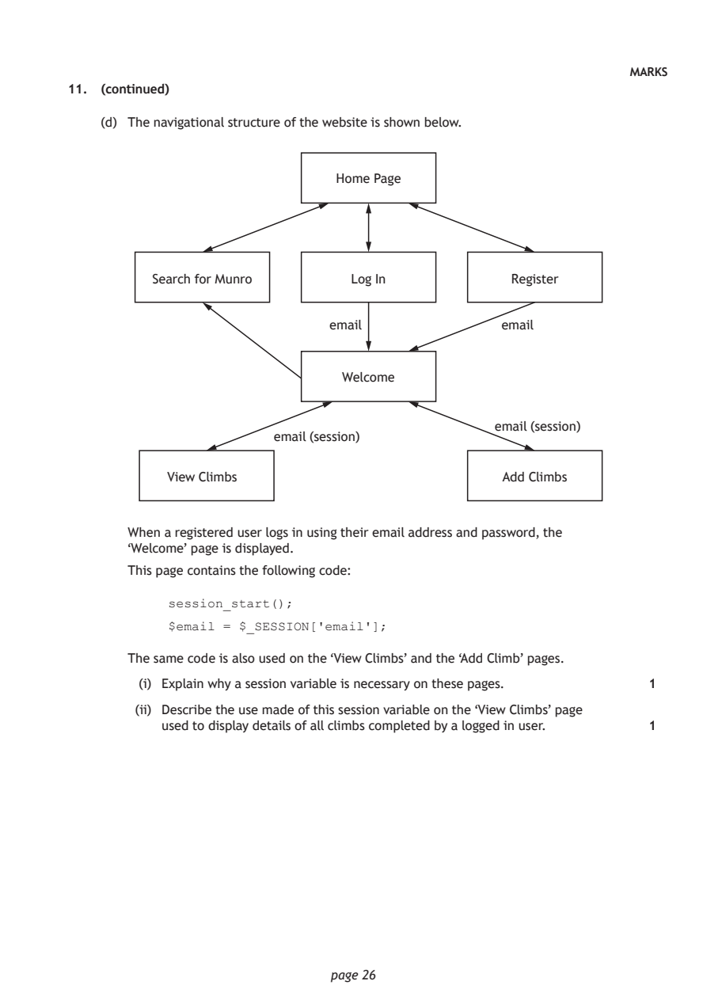
Selectable page text
MARKS
11. (continued)
(d) The navigational structure of the website is shown below.
Home Page
Search for Munro Log In Register
email email
Welcome
email (session)
email (session)
View Climbs Add Climbs
When a registered user logs in using their email address and password, the
‘Welcome’ page is displayed.
This page contains the following code:
session_start();
$email = $_SESSION['email'];
The same code is also used on the ‘View Climbs’ and the ‘Add Climb’ pages.
(i) Explain why a session variable is necessary on these pages. 1
(ii) Describe the use made of this session variable on the ‘View Climbs’ page
used to display details of all climbs completed by a logged in user. 1
page 26PDF page 27
Selectable page text
[Turn over for next question
DO NOT WRITE ON THIS PAGE
page 27PDF page 28
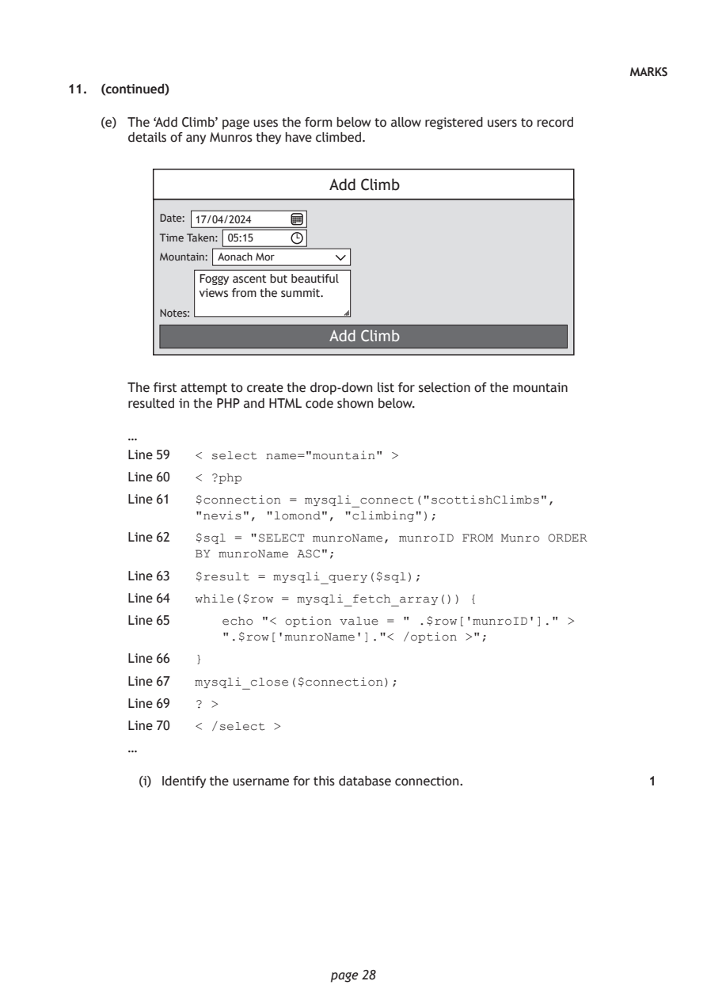
Selectable page text
MARKS
11. (continued)
(e) The ‘Add Climb’ page uses the form below to allow registered users to record
details of any Munros they have climbed.
Add Climb
Date: 17/04/2024
Time Taken: 05:15
Mountain: Aonach Mor
Foggy ascent but beautiful
views from the summit.
Notes:
Add Climb
The first attempt to create the drop-down list for selection of the mountain
resulted in the PHP and HTML code shown below.
…
Line 59
< select name="mountain" >
Line 60
< ?php
Line 61
$connection = mysqli_connect("scottishClimbs",
"nevis", "lomond", "climbing");
Line 62
$sql = "SELECT munroName, munroID FROM Munro ORDER
BY munroName ASC";
Line 63
$result = mysqli_query($sql);
Line 64
while($row = mysqli_fetch_array()) {
Line 65
e cho "< option value = " .$row['munroID']." >
".$row['munroName']."< /option >";
Line 66
}
Line 67
mysqli_close($connection);
Line 69
? >
Line 70
< /select >
…
(i) Identify the username for this database connection. 1
page 28PDF page 29
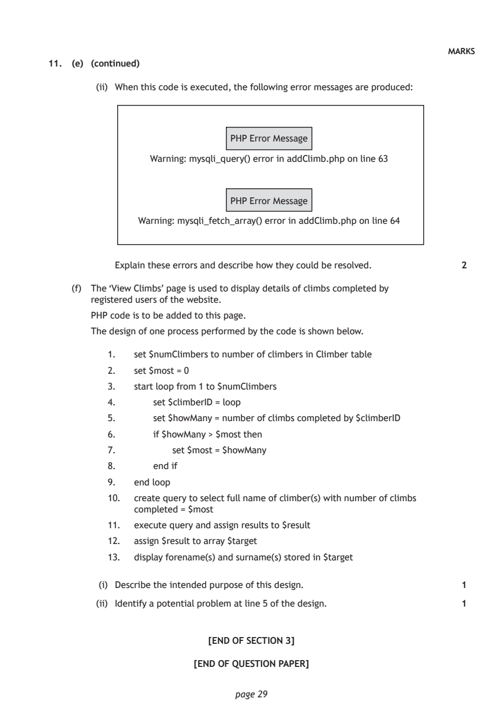
Selectable page text
MARKS
11. (e) (continued)
(ii) When this code is executed, the following error messages are produced:
PHP Error Message
Warning: mysqli_query() error in addClimb.php on line 63
PHP Error Message
Warning: mysqli_fetch_array() error in addClimb.php on line 64
Explain these errors and describe how they could be resolved. 2
(f) The ‘View Climbs’ page is used to display details of climbs completed by
registered users of the website.
PHP code is to be added to this page.
The design of one process performed by the code is shown below.
1. set $numClimbers to number of climbers in Climber table
2. set $most = 0
3. start loop from 1 to $numClimbers
4. set $climberID = loop
5. set $howMany = number of climbs completed by $climberID
6. if $howMany > $most then
7. set $most = $howMany
8. end if
9. end loop
10. create query to select full name of climber(s) with number of climbs
completed = $most
11. execute query and assign results to $result
12. assign $result to array $target
13. display forename(s) and surname(s) stored in $target
(i) Describe the intended purpose of this design. 1
(ii) Identify a potential problem at line 5 of the design. 1
[END OF SECTION 3]
[END OF QUESTION PAPER]
page 29PDF page 30
Selectable page text
[BLANK PAGE]
DO NOT WRITE ON THIS PAGE
page 30PDF page 31
Selectable page text
[BLANK PAGE]
DO NOT WRITE ON THIS PAGE
page 31PDF page 32
Selectable page text
[BLANK PAGE]
DO NOT WRITE ON THIS PAGE
page 32